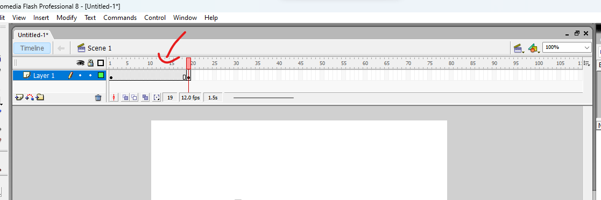
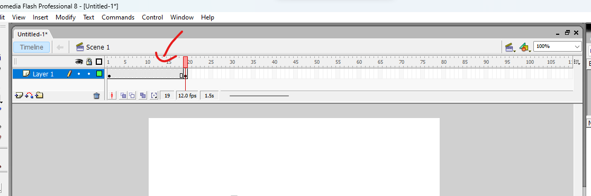

o motion tween na verdade é um jeito mais fácil de fazer uma animação de um objeto se movendo reto.
então vamos lá, um novo documento, e no frame em que voçê quer que começe a animação(no meu caso o primerio frame), crie o objeto que você deseja animar, no caso da vez vamos usar uma bola.
 assim, estenda o frame até a quantidade que voçê queira segurando a tecla "F5"(como você deve ter imaginado, o frame específico fica parado
por uma certa quantia de tempo) e depois copie o frame apertando a tecla "F6". 
assim, estenda o frame até a quantidade que voçê queira segurando a tecla "F5"(como você deve ter imaginado, o frame específico fica parado
por uma certa quantia de tempo) e depois copie o frame apertando a tecla "F6". 
nesse frame copiado,selecione-o, e no frame selecionado,aperte a tecla "V" para ativar a ferramento de seleção, e mova o objeto(no caso a bola) para a posição que deseja.
 depois,clique no meio do frame estendido,clique com o botão direito do mouse,abirá uma janelinha de opções,clique em
"create motion tween".
depois,clique no meio do frame estendido,clique com o botão direito do mouse,abirá uma janelinha de opções,clique em
"create motion tween".

pronto!,agora voçê criou uma animação de movimento de reto! agora é só dá play(tecla "enter") e ver.

e por hoje é só,valeu e até a proxima.
o "ease in" e o "ease out", são exemplos parecidos de motion tween, só que no ease in a animção começa lenta e vai acelerando,e no ease out, o contrário.
muito bem, o primeiro passo é fazer um motion tween igual no tutorial anterior.
o segundo passo é clicar no meio do frame extendido como anteriormente. depois, clique em propriedades, assim aperecendo uma janela embaixo.
dentro da janela de propiedades,há uma opção com um zero e uma setinha pra baixo escrito"ease",segure o clique esquerdo do mouse na setinha e arraste pra baixo. pronto! agora você fez um motion tween com ease in. agora vamos azer o ease out.no ease out é a mesma coisa, só que precisamos arrastar a seta pra cima.
pronto! agora nós fizemos um motion tween tanto no ease in,quanto no ease out. valeu e até a proxima.pagina feita por Asafe372